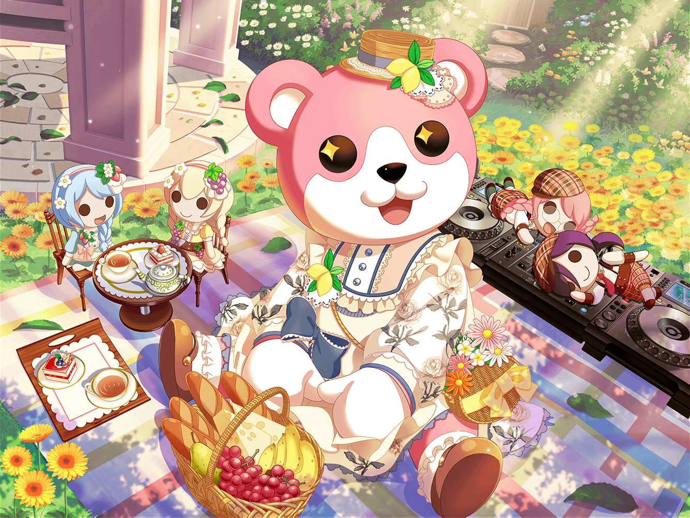

駅前
美咲
あれっ、{{userName}}さん
美咲
こんにちは。今日はお休みですか？
美咲
えっと、あたしはこれから花音さんと
２駅先のカフェに行こうかなって思って待ち合わせしてるんです
美咲
最近できたカフェなんだけど、結構人気なんですよ。
３Dラテアートを出してくれるお店なんですけど……
{{userName}}さんは、もう行きました？
美咲
……あ、それなら絶対行ったほうがいいですよ。
見た目のインパクトもあるし、味もすっごい美味しいですから
美咲
この前は、花音さんと白鷺先輩、二人で行ったんですよ
美咲
……と言っても、いろんなアクシデントがあって
かなり回り道してましたけどね
美咲
あ、実は二人だけで行かせるのがちょっと心配で、
こっそり後ろをついていったんですよ……
美咲
ただ……二人はその回り道がすっごい楽しそうでした
美咲
回り道したこと自体を楽しんでいたっていうか
美咲
けどちょっとわかりませんか？ その気持ち
美咲
あたしは、なんとなくだけどわかりましたよ
美咲
自分が知らない道、一度も通ったことない道って、
そこを歩くだけで新鮮な気持ちになるっていうか……
美咲
あ、こんなところに、池があったんだ、とか？
そういうちょっとした発見があったりして、
なんかワクワクしちゃう、みたいな
美咲
たぶん花音さんも白鷺先輩も、
そういうのが楽しかったのかもですね
美咲
あ、そういえば……
美咲
花音さんは、白鷺先輩とカフェに行けたことが嬉しかったらしくて
新たなカフェを探してるみたいなんですよ……
美咲
まー、２駅先くらいならまだいいんですけど……
この前見てた雑誌は、都内全域が載ってるやつだったんで……
美咲
いやいや、絶対ムリでしょ？
美咲
２駅先の駅に行くだけでもあんなに大変だったのに……
美咲
それにあたし達だってついていかなきゃいけないし、
さすがにそれはキツイですって
美咲
……え？ ついていかなくてもいい？
美咲
あ、なるほど……
二人なら回り道も楽しめますしね……
美咲
けど……
やっぱりそれはちょっと心配だなー
美咲
……ん？
ていうか今何時ですか？
花音さん、遅いな。何かあったのかなー
美咲
あ、ちょっとあたし連絡してみますんで……
美咲
……あ、もしもし花音さん？ どこにいるんですか？
……え？ 黄色いお花が咲いてるところ？ どこ！？
あ～、はいはい、今から行きますから、動かないでくださいね
美咲
いやー、やっぱり次もついていったほうがよさそうですね。
……ということなんで、あたしはこれで。
失礼しまーす